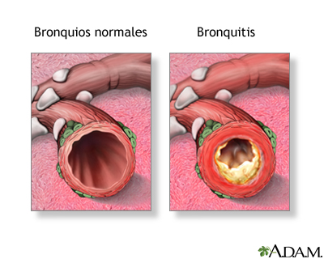

Bronquitis Aguda
Tabla de Contenidos
Descripción
La bronquitis aguda es la inflamación e irritación de los conductos bronquiales, que son las vías respiratorias que llevan oxígeno desde la tráquea hasta los pulmones. Cuando estos conductos se inflaman, se hinchan y producen un exceso de mucosidad, lo que desencadena la tos.
A menudo se le conoce popularmente como un "resfriado de pecho". Generalmente, es una enfermedad autolimitada que dura un corto período de tiempo, aunque la tos puede persistir durante varias semanas después de que la infección inicial haya desaparecido.
Comparación entre bronquitis aguda y crónica
Es importante no confundir la bronquitis aguda, que es un episodio temporal, con la bronquitis crónica, una enfermedad grave y a largo plazo.
| Tipo | Duración | Causas comunes | Síntomas | Tratamiento |
|---|---|---|---|---|
| Bronquitis aguda | De 1 a 3 semanas (tos puede persistir) | Infección viral (resfriado, gripe) | Tos con/sin flema, fiebre ligera, fatiga | Reposo, líquidos, manejo de síntomas |
| Bronquitis crónica | Meses o años (recurrente) | Tabaquismo, exposición prolongada a irritantes | Tos productiva persistente, dificultad respiratoria | Dejar de fumar, broncodilatadores, oxígeno |
La bronquitis crónica es un tipo de EPOC, una condición seria que requiere manejo médico continuo.
Causas
La causa principal de la bronquitis aguda es, con diferencia, una infección viral. En la gran mayoría de los casos (alrededor del 90-95%), los mismos virus que provocan el resfriado común o la gripe (influenza) son los responsables de inflamar los bronquios.
Otras causas menos frecuentes incluyen:
- Infección bacteriana: Es mucho menos común que la viral. A veces puede desarrollarse como una infección secundaria después de un episodio viral, especialmente en personas con sistemas inmunitarios debilitados o enfermedades pulmonares previas.
- Irritantes ambientales: La inhalación de humo (como el del tabaco, siendo fumador activo o pasivo), polvo intenso, vapores químicos fuertes o niveles altos de contaminación del aire también puede provocar una inflamación aguda de los bronquios.
Debido a que la mayoría de los casos son virales, los antibióticos no suelen ser efectivos para tratar la bronquitis aguda.
Síntomas
El síntoma más característico de la bronquitis aguda es una tos persistente. Esta tos puede ser seca al principio, pero frecuentemente se convierte en una tos productiva, es decir, que produce mucosidad (flema). La flema puede ser transparente, blanca, amarillenta o verdosa.
Otros síntomas suelen ser similares a los de un resfriado o una gripe:
- Dolor o sensación de opresión en el pecho, a menudo al toser
- Fatiga y malestar general
- Fiebre leve (fiebre alta podría sugerir neumonía)
- Escalofríos leves
- Dolor de cabeza
- Dolor de garganta
- Sibilancias (un silbido al respirar) o ligera dificultad para respirar
Mientras que la fiebre y el malestar suelen desaparecer en pocos días, la tos es el síntoma más duradero y puede persistir de dos a cuatro semanas, incluso después de que la infección haya sido eliminada, debido a la irritación prolongada de los bronquios.
Factores de riesgo
Ciertas condiciones y hábitos pueden aumentar la probabilidad de desarrollar bronquitis aguda:
- Tabaquismo: Fumar (activo o pasivo) daña los cilios, los pequeños pelos que limpian los bronquios, haciendo que los pulmones sean más vulnerables a la infección y la irritación.
- Sistema inmunitario debilitado: Esto es más común en niños muy pequeños, adultos mayores o personas con enfermedades crónicas o tratamientos que comprometen la inmunidad.
- Exposición a irritantes: Trabajar o vivir en un lugar con alta contaminación del aire, polvo o vapores químicos.
- Enfermedades respiratorias crónicas: Padecer asma o EPOC (bronquitis crónica) predispone a sufrir episodios agudos.
- Reflujo gastroesofágico (ERGE): El ácido estomacal que sube repetidamente puede irritar la garganta y las vías respiratorias.
Pruebas y diagnóstico
En la mayoría de los casos, un médico puede diagnosticar la bronquitis aguda basándose en el historial clínico y un examen físico. La parte más importante del examen es la auscultación pulmonar, donde el médico usa un estetoscopio para escuchar los pulmones mientras el paciente respira. El médico buscará sonidos como roncus (sonidos roncos) o sibilancias.
No se suelen necesitar muchas pruebas, pero en algunos casos se pueden solicitar:
- Radiografía de tórax: Esta es la prueba más común si los síntomas son graves. No sirve para "ver" la bronquitis aguda, sino para descartar neumonía, una infección más grave del tejido pulmonar. Se recomienda si el paciente tiene fiebre alta, dificultad respiratoria significativa, dolor en el pecho agudo o si es un adulto mayor.
- Análisis de esputo (mucosidad): Puede realizarse si se sospecha una infección bacteriana (como la tos ferina) o en personas con enfermedades pulmonares crónicas.
- Pruebas de función pulmonar (Espirometría): Pueden usarse si se sospecha que hay asma o EPOC subyacente.
Tratamiento
Dado que la bronquitis aguda es casi siempre causada por un virus, el tratamiento se centra en aliviar los síntomas mientras el cuerpo combate la infección por sí mismo. Los antibióticos no son efectivos contra los virus y no se recetan a menos que haya una fuerte sospecha de una infección bacteriana secundaria.
Las medidas de cuidado personal son la clave del tratamiento:
- Reposo: Descansar adecuadamente ayuda al sistema inmunitario a recuperarse.
- Hidratación: Beber abundantes líquidos (agua, caldos, infusiones) ayuda a fluidificar la mucosidad, facilitando su expulsión.
- Humidificar el ambiente: Usar un humidificador de aire frío o respirar el vapor de una ducha caliente puede aliviar la irritación de las vías respiratorias y la tos seca.
- Medicamentos de venta libre: Se pueden usar analgésicos y antipiréticos como paracetamol o ibuprofeno para aliviar el malestar general, la fiebre y el dolor de cabeza.
- Alivio para la tos: La tos es un mecanismo de defensa para limpiar los pulmones. Sin embargo, si la tos es muy molesta e impide dormir, se puede considerar el uso de miel (para mayores de 1 año) o antitusígenos de venta libre, aunque su eficacia es variable.
- Evitar irritantes: Es fundamental no fumar y evitar la exposición al humo de segunda mano, polvo o vapores fuertes.
En personas con asma, el médico puede recetar un broncodilatador inhalado para ayudar a abrir las vías respiratorias y reducir las sibilancias.
Prevención
Si bien no siempre se puede evitar, se pueden tomar medidas para reducir el riesgo de contraer bronquitis aguda:
- Lavado de manos: Lavarse las manos frecuentemente con agua y jabón es la mejor manera de prevenir la propagación de virus.
- Evitar fumar: El tabaquismo es el principal factor de riesgo para problemas pulmonares.
- Vacunación: Ponerse la vacuna anual contra la gripe (influenza) puede prevenir muchos casos de bronquitis aguda derivados de este virus.
- Cubrirse al toser: Toser o estornudar en el codo o en un pañuelo para evitar la propagación de gérmenes.
Cuándo consultar al médico
Aunque la bronquitis aguda suele curarse sola, es importante buscar atención médica si se presenta alguno de los siguientes síntomas:
- Fiebre alta (más de 38.5°C) que dura varios días.
- Tos que produce mucosidad con sangre (hemoptisis).
- Dificultad significativa para respirar o sensación de ahogo.
- Síntomas que no mejoran después de 3 semanas.
- Episodios recurrentes de bronquitis.
- Si se padece una enfermedad cardíaca o pulmonar crónica (como EPOC, asma o insuficiencia cardíaca).